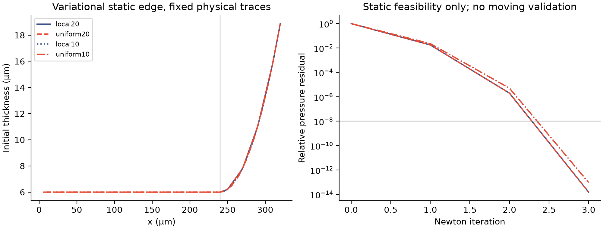

DRIFT · STATIC FEASIBILITY · 2026-11-13
初始边缘能平衡，
释放接口仍未收敛。
用相同方向双面毛细面积构造离散巨势，固定6μm膜厚、500μm半径及240/320μm端点。内部形状由变分求解，不植入经验排液律；此处只做独立SI静态诊断，没有运行运动求解器。
不能扩大计算：4组静态压力残差≤9.47×10⁻¹⁴，但释放端点初始约束后的图面通量估计，局部与均匀网格相差约43%，20→10μm加密相差约48%。这个估计不是物理切面上的独立法向通量，更不是已验证的持续排液。

| 网格 | 粒子 | 静态压力相对残差 | 释放后图面通量估计 m³/s | 初始约束反力压力 Pa |
|---|---|---|---|---|
| local20 | 72 | 1.56e-14 | 1.315e-11 | 26.13 |
| uniform20 | 144 | 1.56e-14 | 9.201e-12 | 45.72 |
| local10 | 256 | 9.47e-14 | 2.536e-11 | 26.11 |
| uniform10 | 544 | 9.47e-14 | 1.774e-11 | 45.69 |
这个诊断改变了什么
消除边界高度突跳并不能自动得到网格无关的初始排液。端点仍有26–46Pa的约束反力；移除约束会产生瞬态，且其离散通量对分辨率敏感。下一步应检验物理切面位置、初始曲率过渡及释放条件，再决定是否接入完整运动。不能靠延长这组计算来掩盖差异。
该初值是恒定平衡活度的毛细准备态。若分配表活，需按实际曲面积分初始化；它与旧平膜突跳初值并非相同表活总量。尚未检验变表活运动、独立法向通量、区域机械功、时间收敛或实验。
完整C1仍开放；0.734秒静态计算，无长训练任务。